Creates NURBS curves for selected transform nodes.
Creates NURBS curves (hereafter referred to as curves) for selected transform nodes, and based on those curves, creates lofted NURBS surfaces (hereafter referred to as surfaces) or meshes.
Additionally, if joint nodes are selected, the created objects can be smooth bound using options.
Launch the tool from the dedicated menu or with the following command:
import faketools.tools.curveSurface_creator_ui
faketools.tools.curveSurface_creator_ui.show_ui()
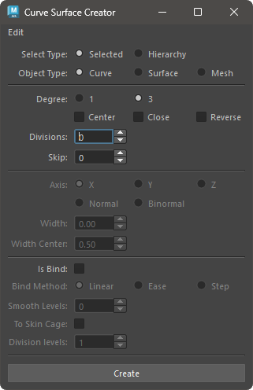
Select Type as either Selected (create between selected nodes) or Hierarchy (create for each hierarchy of selected nodes).Object Type.Create button to create curves or surfaces.The main options are divided into the following four categories:
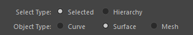
Selected: Create between selected nodes.Hierarchy: Create for each hierarchy of selected nodes.Curve: Create curves.Surface: Create lofted surfaces based on curves.Mesh: Create lofted meshes based on curves.Options to set when creating curves.
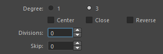
Options to set when creating surfaces or meshes. Only valid when objectType is Surface or Mesh.
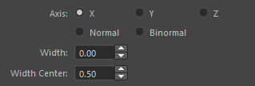
X: Create surfaces in the X-axis direction of the selected nodes.Y: Create surfaces in the Y-axis direction of the selected nodes.Z: Create surfaces in the Z-axis direction of the selected nodes.Normal: Create surfaces in the normal direction of the curve.Binormal: Create surfaces in the binormal direction of the curve.Options for smooth binding the created objects to the selected nodes. Only valid if the selected nodes are joint nodes.
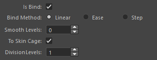
Is Bind
Bind Method
Linear: Bind with linear weights.
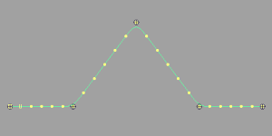
Ease: Bind with ease-in-out weights.
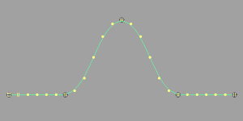
Step: Bind with step weights.
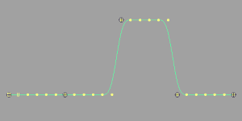
Smooth Levels
Bind Method.To Skin Cage
objectType is Surface.Division Levels
To Skin Cage is on.Commands used to create/edit curves are stored here.
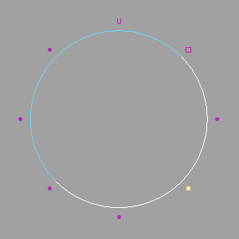 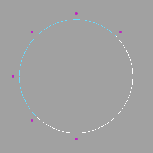
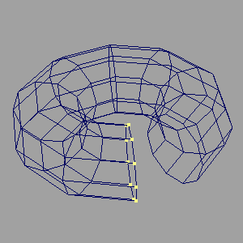 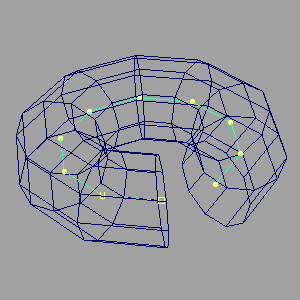